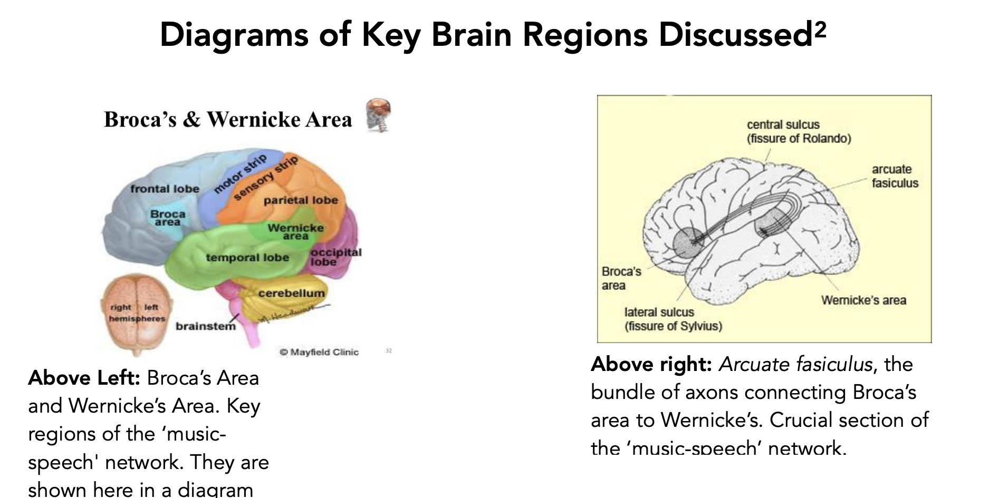

Improvisation is neurologically singular. Studying it can benefit anyone!
It is known that improvisation is a distinct musical ability but what then are the unique advantages gained from the study of improvisation? Is something fundamental lacking in the education of musicians who cannot improvise? Is spontaneous creativity useful for education across the board? What are other potential advantages of engagement with improvisation for personal, psychological and organisational development in both individuals and groups? What light can the brains of jazz musicians shed on these questions?
Using a literary research method this thesis presents an overview and discussion of key neuroimaging results from the first fMRI experiments ever to explicitly separate musical improvisation from prepared musical performance. As a path into the discussion, studies from recent decades in the field of music cognition are discussed in connection with psycholinguistic results pertaining to language cognition. It begins with a core question about the extent to which music may be compared with language - often cited as “the most everyday form of improvisation among humans” - since in the points of similarity and departure with linguistic improvisation, lies the key to understanding the benefits of this type of cognitive training. The aim of the ensuing discussion is to discover a scientific basis for the existence of connections between neurology, psychology and the ‘jazz mentality’ that are also relevant in everyday life not only in a professional musical career.

Specific fMRI experiments targeting what we may call ‘jazz cognition’ reveal patterns of activation and deactivation in both prefrontal and classical language areas suggesting a healthy absorption in the task of improvisation that correlates with modern conceptions of the ‘flow’ state. Flow states are becoming increasingly cited by psychologists and neuroscientists in analyses of cognitive processes with positive effects on both physical and mental health. Multiple other experiments using fMRI, EEG and PET scans are discussed in relation to both music and language cognition. These explain preexisting accepted theories as to the benefits of music education in general before extending them to incorporate the new data surrounding improvisation. Surveys by psychologists and musicologists who have collected large amounts of data relating to personality traits in musicians and students from different genres are also compared with and analysed in light of these neurological results.
Finally, this study investigates how ‘jazz wisdom' (in this context meaning the application of lessons obtained uniquely from improvisational studies) has become increasingly cited by progressive thinkers in broader contexts beyond the realm of music. These include: organisational science, embodied cognition and calls to improve the hierarchical structures in the workplace and to direct the long-term goals of education systems towards a society with higher self-awareness.
Key Players
My research introduced me to some of the key neuroscientists investigating the uniqueness of improvisation's associated cognitive processes today. Unsurprisingly many of them are also musicians, in some cases even accomplished ones. I have included links to lectures by many of them in my gallery below. These were some of the videos I was most intrigued by having decided to research positive effects of the study of improvisation on body and mind.
Structural Note
My thesis is divided into an introduction plus three research chapters and a conclusion. The three research chapters describe, analyse and juxtapose the main experiments and journals that have most recently been carried out and published in the field of musical improvisation neuroscience. The results discovered thus far are truly fascinating and seem to correspond to the life-lessons I have personally discovered through my own study of improvisation. If you are interested in reading more please feel free to download my thesis in full here. Alternatively check out the awesome lectures given by the field's leaders in the gallery below.
P.S - The dancing cockatoo is REAL! Verified by the phenomenal neuroscientist Aniruddh Patel whose work on rhythm perception really blew my mind.
*All the above images and all the videos below are fully referenced in the bibliography.